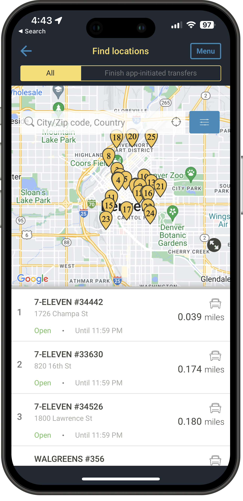
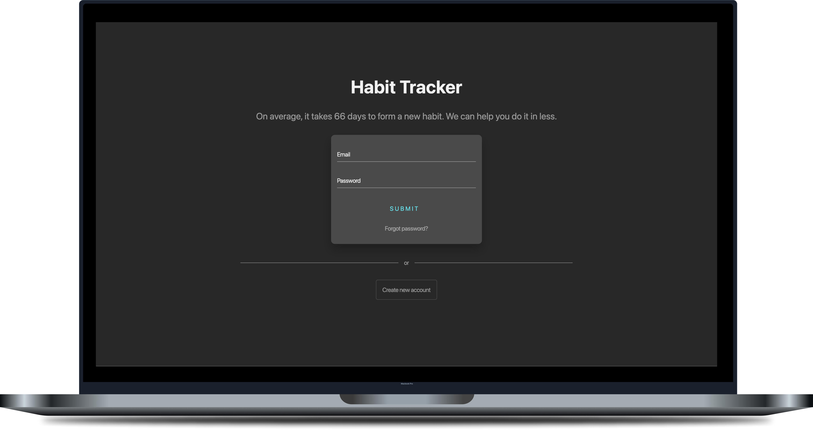
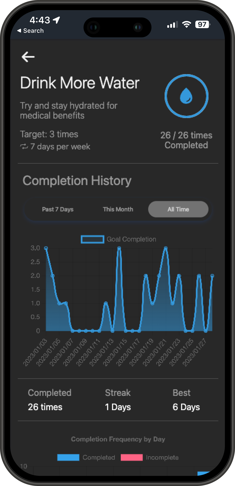
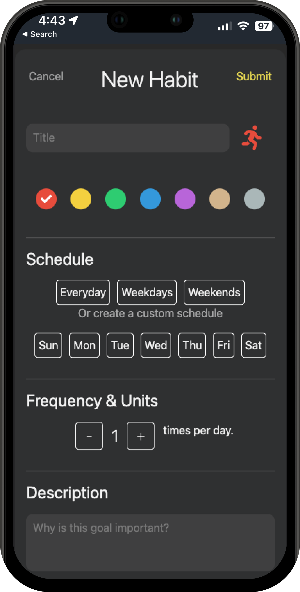
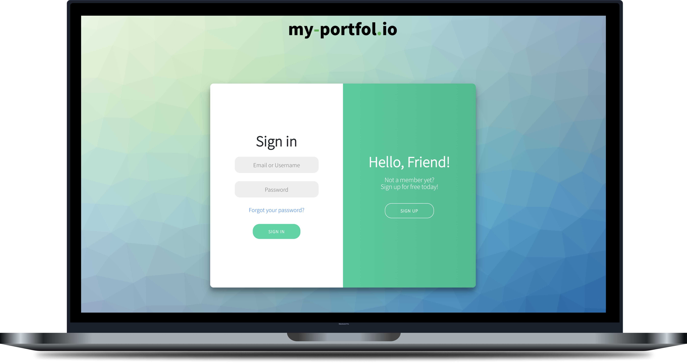
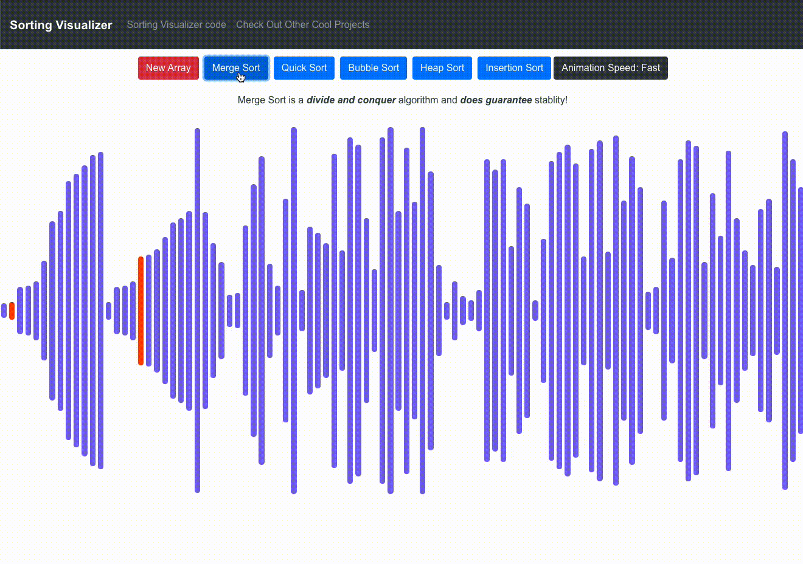
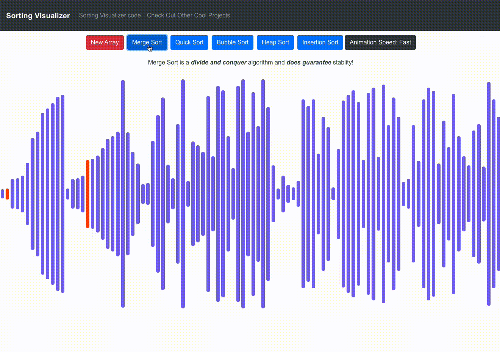
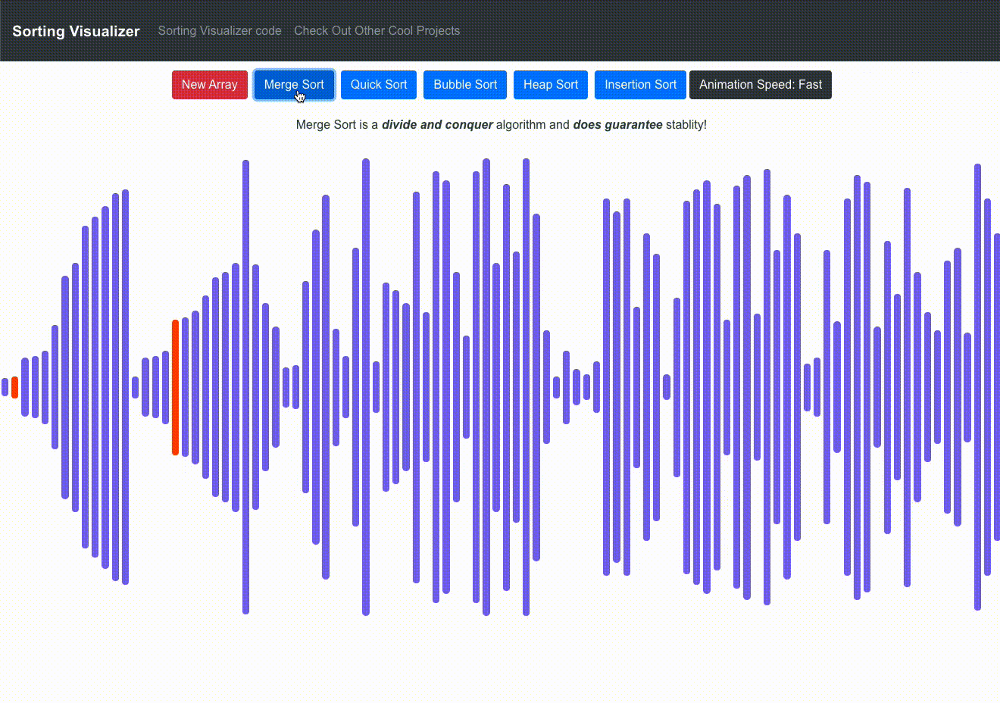

ABOUT ME
Full stack software engineer focused on creating fast, scalable systems for the web
Hello! My name is John and I enjoy building things for the web.
I graduated with my degree in computer science in 2016 and I've had the privelage of working with small business clients as well as in a large scale production environment at Western Union.
I am experienced in creating outstanding user experiences, from interfaces to APIs.
Here are a few of the technologies I've worked with recently:
- JavaScript (ES6+)
- React.js / Next.js
- MySQL
- Node.js
- C++
- TypeScript
MY WORK
Here is a gallery of some of the projects I've worked on recently, as well as a section with more projects, found below.
 

Other Noteworthy Projects
Habit Tracker
Full stack habit tracker app for staying consistent while forming new habits or breaking old ones.- Next.js
- Node.js
- MySQL
my-portfol.io
Full stack web application for users to host their personal portfolios on. Users can register, login and upload portfolio content to their profile.- React.js
- SQL
- AWS
Pathfinding Visualizer
React application designed to help visualize various pathfinding algorithms like DFS, BFS, Astar and Dijkstra's- React.js
- SCSS
Sorting Visualizer
React application designed to help visualize various sorting algorithms like quicksort, mergesort, and heapsort.- React.js
- SCSS
Forte Music App
Full stack application designed to match music students with local tutors. Users can login then search for teachers and schedule lessons.- JQuery
- SQL
- AWS
Blob Detection
Computer vision python project implementing blob detection via color filtering, blob expansion, and centroid computations.- Python
- NumPy
- Pandas